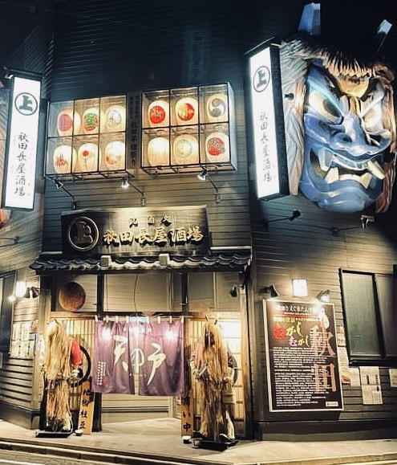
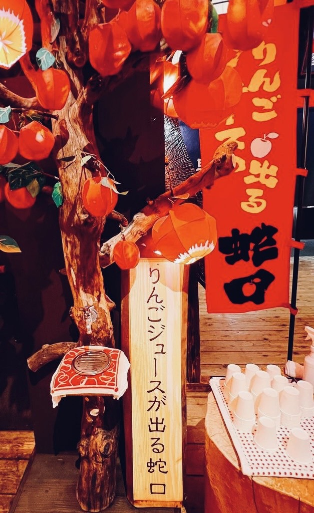
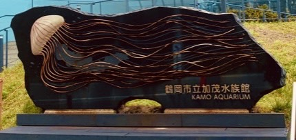

東北観察
1.なまはげ

撮影者：父(昨年9月)
場所：秋田長屋酒場
秋田と言えば、、なまはげ！そんななまはげが正面で出迎えてくれ、
遠くから見ても大きな迫力のあるなまはげが印象的な居酒屋です。
初めてのお客さんも“何だろう”と行ってみたくなるような看板になっています。
2.蛇口からリンゴジュース

撮影者：友達(8月29日)
場所：星野リゾート 青森屋
青森県はリンゴで有名ですが、ここは蛇口から出てくるリンゴジュース
が楽しめる場所です。周りのリンゴの木や看板が雰囲気をだし、お祭り
の感じが楽しめる空間になっています。
2.蛇口からリンゴジュース

撮影者：自分(2017年8月)
場所：加茂水族館
山形県にある水族館で、ここはクラゲドリーム館という名前があるほどクラゲが
有名で、展示種類は世界最大級となっています。そこから看板にはクラゲが大きく
採用されたデザインとなっています